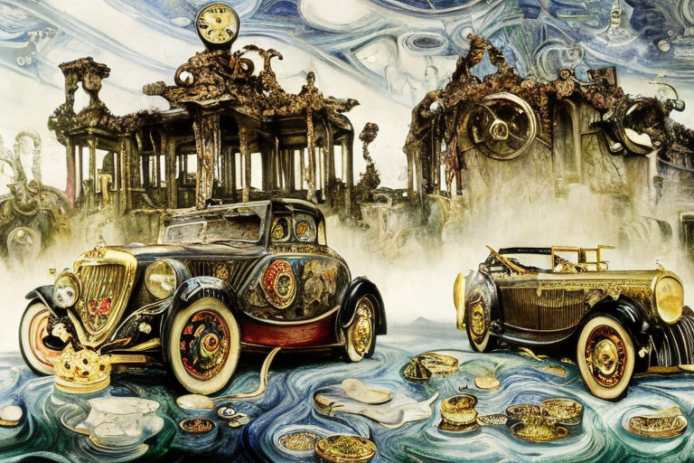
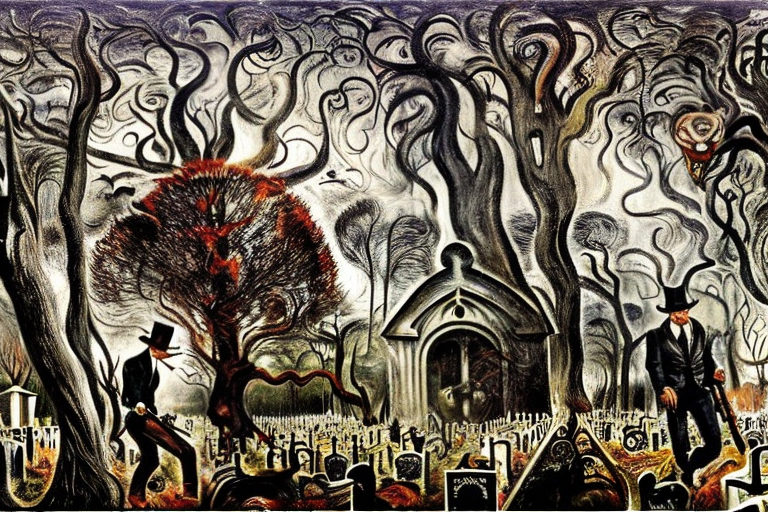
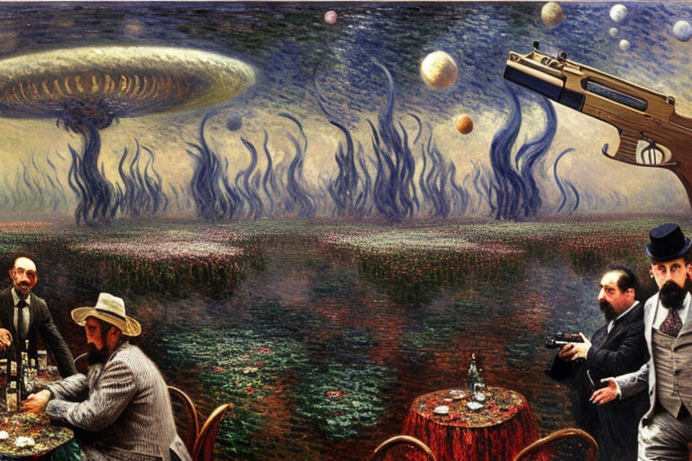
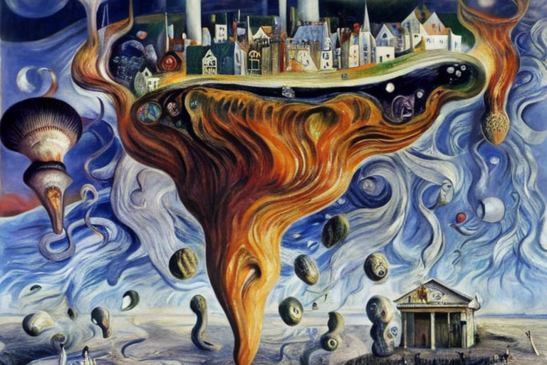

The new atomic currency and the robbers
HOME
Table of Contents
Atomic currency
In a faraway galaxy, on a planet orbiting a star not dissimilar to our own, a discovery was made that shook the very foundations of physics and economics. Atomic currency, a form of money that was composed of individual atoms, had been unearthed. The implications of this discovery were staggering, and it sparked a frenzied race to understand the properties of this new form of money.
As the news spread across the galaxy, scientists and economists flocked to the planet to study the atomic currency. They discovered that each atom was unique, with its own distinct properties that determined its value. These atoms were intricately bound together, forming a lattice-like structure that made up the money.
The atomic currency was incredibly dense, with a single atom weighing more than a tonne. It was also incredibly durable, with the lattice structure providing immense strength and resilience. However, the most intriguing property of the atomic currency was its ability to store information.
Each atom contained a vast amount of information, including the history of every transaction it had been involved in, as well as its current value and location. This information was stored in the intricate lattice structure, which acted as a sort of quantum computer, able to perform complex calculations at a speed that was beyond anything previously seen.
As the scientists delved deeper into the properties of the atomic currency, they began to uncover new and unexpected phenomena. They discovered that the atoms could be manipulated, causing them to vibrate at specific frequencies and emit a particular energy signature. By harnessing this energy, they were able to create new forms of currency, each with its own unique properties and uses.
The discovery of atomic currency had far-reaching implications, not just for the economy but for the very nature of reality itself. It challenged our understanding of the fundamental laws of physics, and opened up new avenues of exploration and discovery.
Evolution of monetary technology

The discovery of atomic currency had sent shockwaves through the galaxy, and it seemed that everyone was vying for a piece of the pie. Governments, corporations, and even individual investors were all clamoring for a chance to get their hands on this new form of money. But the road to atomic currency was not an easy one.
It all started with the big clumps of money that had dominated the galaxy’s economy for centuries. These clumps of money were massive conglomerates of particles, each one weighing in at billions of tons. They were unwieldy and difficult to transport, but they were the backbone of the economy.
The problem with the big clumps of money was their indivisibility. They couldn’t be broken down into smaller denominations, making it difficult for individuals to conduct transactions. It was a cumbersome system that was ripe for disruption.
Theoretical physicists had been studying the fundamental nature of matter for decades, searching for a way to break down the big clumps of money into more manageable units. And finally, they had found a solution.
Through a process of quantum entanglement and particle manipulation, the physicists were able to transform the particles of the big clumps of money into individual atoms. These atoms could then be organized into the lattice-like structure that formed the atomic currency.
It was a revolutionary breakthrough, and it transformed the entire economy overnight. The big clumps of money were no longer needed, replaced by the fine-grained atomic currency that could be easily traded and transported.
Encounter with the thieves

As the galaxy became more reliant on atomic currency, a new trend emerged. People began to transport their money to cemeteries, where they would bury it alongside their loved ones as a symbol of their wealth and legacy. It was a macabre practice, but it caught on quickly.
One day, a wealthy businessman named Marcus decided to push a large clump of money to the cemetery instead of carrying fine-grained currency. He had amassed a fortune in the old system, and he didn’t trust the new atomic currency. He thought that burying his wealth in a physical form would protect it from the fluctuations of the market.
But as he pushed the massive clump of money down the street, he quickly realized his mistake. The clump was too heavy and unwieldy, and he struggled to move it. People stared at him in disbelief as he huffed and puffed, sweating profusely under the weight of his wealth.
As he approached the cemetery, he saw that the gate was too narrow for the clump to pass through. He tried to force it through, but it wouldn’t budge. Frustrated and embarrassed, he sat down on the ground, wondering what he was going to do.
It was then that he heard a rustling sound coming from the nearby trees. Out of the shadows emerged a group of robbers, their eyes fixed on the clump of money. They had been watching him from afar, waiting for the right moment to strike.
Marcus tried to defend himself, but he was no match for the robbers. They overpowered him and made off with the clump of money, leaving him battered and bruised on the ground.
Emergence of the gang

After the incident with Marcus, the robbers became bolder and more organized. They knew that there were still people out there who preferred the old clumps of money to the new atomic currency, and they were determined to exploit that weakness.
They would roam the streets, looking for people carrying large clumps of money. They knew that the clumps were cumbersome and hard to hide, making their owners easy targets. In contrast, the fine-grained atomic currency was much easier to conceal in a pocket or a small container, making it a less attractive target for thieves.
As the robbers became more brazen, people started to adapt. They learned to keep their wealth hidden, carrying only small amounts of fine-grained currency with them. They would bury the rest in secret locations, hoping to keep it safe from the prying eyes of the robbers.
But even with these precautions, the robbers still managed to find their targets. They would lurk in the shadows, waiting for the right moment to strike. And when they did, they were ruthless and efficient, leaving their victims beaten and bloodied on the ground.
It was a dangerous time in the galaxy, and people lived in fear of the robbers. They would whisper about them in hushed tones, warning their loved ones to be careful. But despite the danger, the fine-grained atomic currency continued to gain acceptance, slowly but surely replacing the clumps of money that had once been the norm.
The theory of transformation

As the years passed, a new theory emerged about the fate of the big clumps of money. Theoretical physicists hypothesized that the immense pressure and force that these clumps of money experienced over time led to their gradual disintegration into fine-grained atomic currency.
The forces that developed in order for this transformation to occur were immense. The clumps of money were comprised of particles held together by strong nuclear forces. But as time passed and the particles were subjected to immense pressure and force, the nuclear forces weakened, leading to the disintegration of the clumps.
As the clumps disintegrated, the particles were transformed into the fine-grained atomic currency that had become the norm in the galaxy. The transformation was slow and gradual, but it was a natural process that occurred over time.
The theoretical physicists were fascinated by this process and studied it extensively. They discovered that the disintegration of the clumps of money was not random, but followed a specific pattern based on the properties of the particles within the clumps.
As they delved deeper into this phenomenon, they realized that the transformation of the clumps of money into fine-grained atomic currency was not just a physical process, but had implications for the metaphysical world as well.
They postulated that the transformation of the clumps of money was related to the concept of cemeteries, where the physical bodies of beings were laid to rest after their passing. In the same way that the clumps of money gradually disintegrated into fine-grained currency, so too did the physical bodies of beings decompose and return to the earth.
This theory sparked a new wave of philosophical and metaphysical debates throughout the galaxy. People began to question the nature of life and death, and the relationship between the physical and metaphysical worlds.
As for the robbers, they slowly faded into obscurity as the fine-grained atomic currency became the norm. The pressure and force they had once wielded over the people of the galaxy was no match for the natural processes that governed the universe.
And so, the galaxy continued to evolve and change, driven by both the physical laws that governed the universe and the philosophical and metaphysical debates that shaped its understanding of the world.